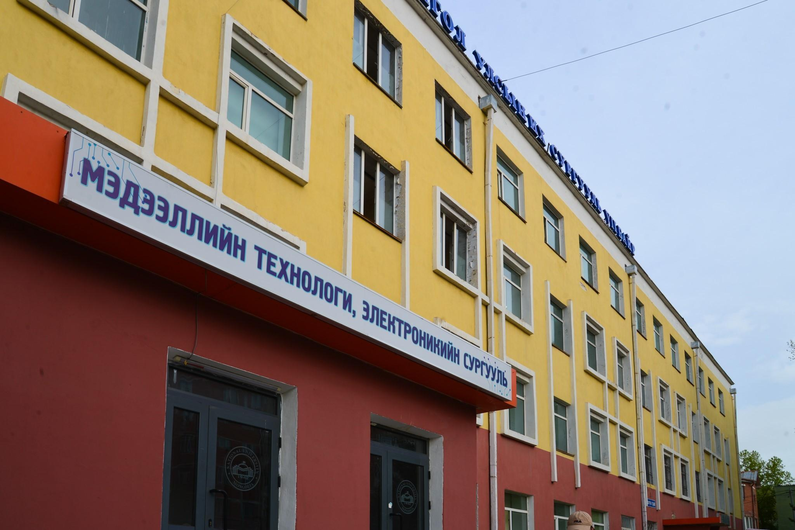
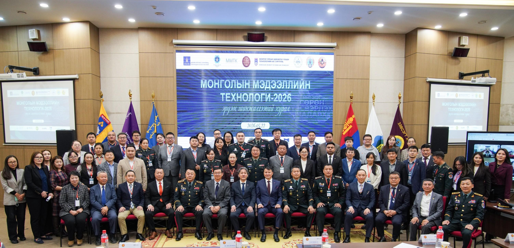

МУИС-ийн багш | AI & Гүн сургалтын судлаач | "Magic Code AI"-г үүсгэн байгуулагч

Монгол Улсын Их Сургууль • Мэдээллийн технологи, электроникийн сургууль (МТЭС)
Цогтбаатарын Энхтуяа нь Монгол Улсын дээд боловсролын тэргүүлэх байгууллага болох Монгол Улсын Их Сургуулийн (МУИС) Мэдээлэл, компьютерын ухааны тэнхимд 2018 оны 3-р сараас эхлэн тасралтгүй 8 гаруй жил багшаар ажиллаж байна. Тэрээр Компьютерын шинжлэх ухааны магистр зэрэгтэй ба их сургуулийн шинэчилсэн бүтцийн дагуу Мэдээллийн технологи, электроникийн сургуулийн (МТЭС) харьяанд үйл ажиллагаагаа явуулж байна.
Түүний заадаг үндсэн хичээлүүд болон эрдэм шинжилгээний чиглэлүүд нь орчин үеийн мэдээллийн технологийн цөм салбарууд болох Мэдээллийн систем (Information Systems), Хиймэл оюун ухаан (Artificial Intelligence), Өгөгдлийн шинжилгээ (Data Analysis), Гүн сургалт (Deep Learning) болон алгоритмын хөгжүүлэлт рүү чиглэдэг.
Их сургуулийн багш хүний хамгийн чухал үүрэг бол дараагийн үеийн залуу судлаачдыг бэлтгэх, эрдэм шинжилгээний бодит сорилтуудыг бие даан шийдвэрлэх арга барилд сургах явдал юм. Ц.Энхтуяа багшийн энэхүү чиглэлд хийсэн томоохон ажлуудын нэг бол МУИС-ийн Мэдээллийн технологийн оюутан Эрдэнэбатын Баянбаттай хамтран гүйцэтгэсэн "Гүн сургалт ашиглан Text CAPTCHA-ийн эмзэг байдлыг судлах нь" (Studying Text CAPTCHA Vulnerability with Deep Learning) сэдэвт эрдэм шинжилгээний ажил юм.
Text CAPTCHA эмзэг байдлын судалгаа: 772 сургалтын зураг, 3 өөр архитектурын CPU туршилт ба CNN загварын 46.58% амжилт
Уг судалгаа нь орчин үеийн кибер аюулгүй байдал болон хиймэл оюун ухааны огтлолцол дээр хийгдсэн бөгөөд уламжлалт вэбсайтын хамгаалалтын систем болох текстийн CAPTCHA-г гүн мэдрэлийн сүлжээгээр хэрхэн эвдэх, таних боломжтойг дараах 3 өөр архитектураар харьцуулан туршсан байна:
| Загвар (Model) | Архитектурын онцлог | Туршилтын үр дүн & Нарийвчлал |
|---|---|---|
| CNN (Convolutional Neural Network) | Харьцангуй энгийн конволюцын давхаргуудаас бүрдсэн сүлжээ. Тэмдэгтүүдийн геометр хэлбэрийг шууд шүүж таньдаг. | 46.58% нарийвчлалтайгаар CAPTCHA-г бүрэн таньж, хамгийн өндөр гүйцэтгэл үзүүлсэн. |
| MobileNetV2 | Хөдөлгөөнт болон бага нөөцтэй төхөөрөмжид зориулагдсан, параметр цөөтэй хөнгөн загвар. | Богино хугацаанд тооцоолол хийдэг хэдий ч текстийн гажилтыг салгах нарийвчлал дундаж байв. |
| CRNN + CTC | Конволюцын сүлжээг дарааллын RNN (Recurrent Neural Network) болон CTC loss функцтэй хослуулсан бүтэц. | Цуваа тэмдэгтүүдийг бүхэлд нь унших давуу талтай ч өгөгдлийн хэмжээ хязгаарлагдмал үед CNN-ээс бага үр дүн үзүүлсэн. |
Энэхүү туршилтыг өндөр хүчин чадалтай GPU ашиглахгүйгээр, зөвхөн энгийн CPU дээр 772 ширхэг бодит сургалтын зураг ашиглан хийсэн нь онцлог юм. Энгийн CNN загвар ашиглахад л 46.58%-ийн амжилттайгаар хамгаалалтыг нэвтэлж чадсан нь уламжлалт текстийн CAPTCHA-г орчин үеийн кибер аюулгүй байдалд хангалтгүй болсныг практикт нотолсон чухал үр дүн болсон байна.

Академик үйл ажиллагаа: Э.Дамдинсүрэнгийн нэрэмжит олимпиад ба "ММТ-2026" эрдэм шинжилгээний хурал
Ц.Энхтуяа багшийн их сургууль дахь үйл ажиллагаа нь зөвхөн хичээл заахаар хязгаарлагдахгүй, оюутан залуусын дунд зохиогддог томоохон тэмцээн, улсын хэмжээний эрдмийн чуулгануудыг зохион байгуулах ажилд манлайлан оролцдог:
Монгол Улсын Гавьяат багш, профессор Э.Дамдинсүрэнгийн нэрэмжит Электроникийн 5 дахь удаагийн олимпиадыг зохион байгуулах комиссын гишүүн, шүүгчээр ажиллаж, оюутнуудын инженерчлэл, алгоритмын бүтээлч сэтгэлгээг дэмжсэн.
Монголын мэдээллийн технологийн консорциум, их дээд сургуулиудын хамтарсан эрдэм шинжилгээний хуралд оюутан Э.Баянбаттай хамтарсан CAPTCHA гүн сургалтын бүтээлээрээ амжилттай оролцож хэлэлцүүлэв.
Багш хүний хувьд онолын суурь ойлголтуудыг бодит амьдрал дээрх код бичилт, системийн туршилт (Hands-on problem solving)-той хослуулан заах зарчмыг баримталдаг. Оюутнууд хичээлийн явцад зөвхөн алгоритм судлаад зогсохгүй, кибер аюулгүй байдлын эмзэг цэгүүдийг өөрсдөө кодлон туршиж, хиймэл мэдрэлийн сүлжээг практикт бүтээх чадвартай төгсдөг нь энэхүү сургалтын гол давуу тал юм.